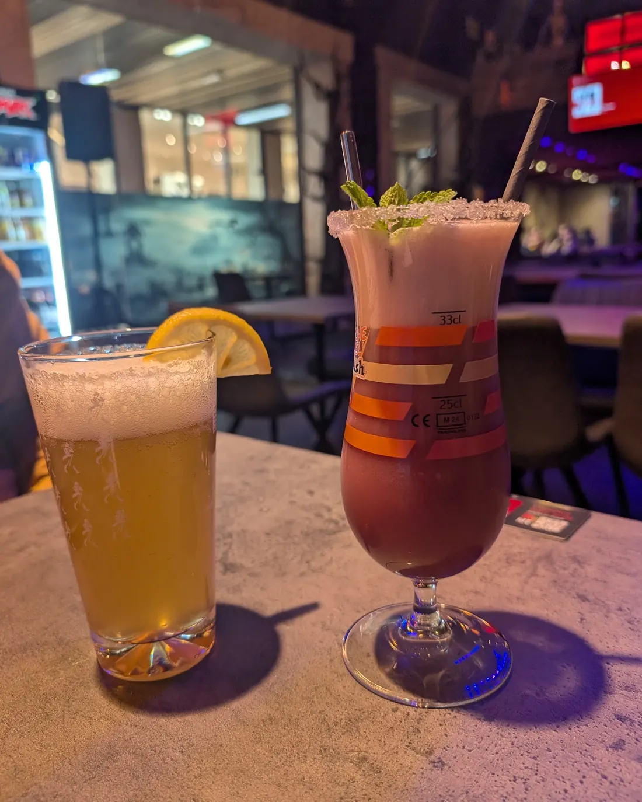
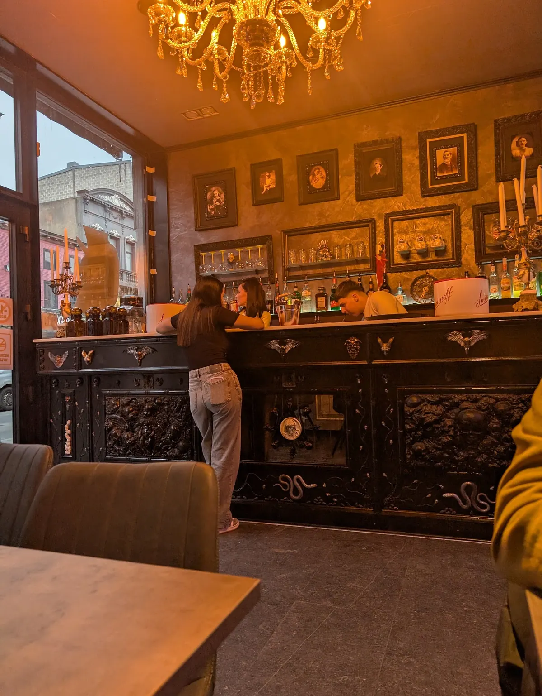
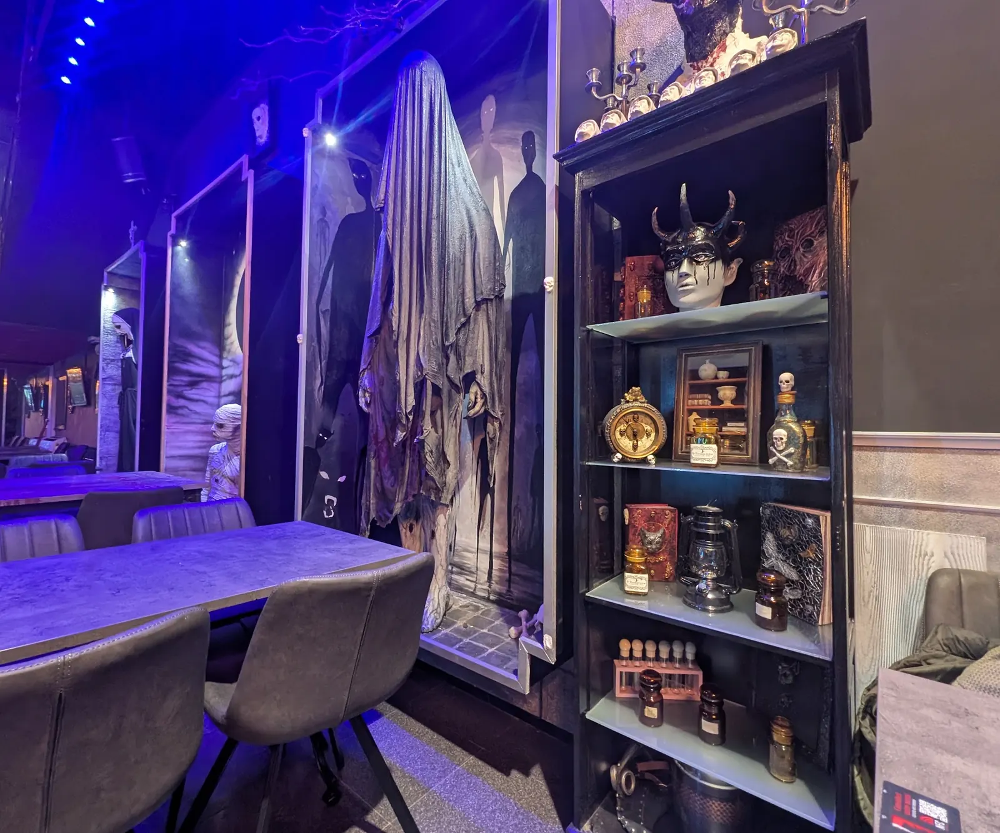
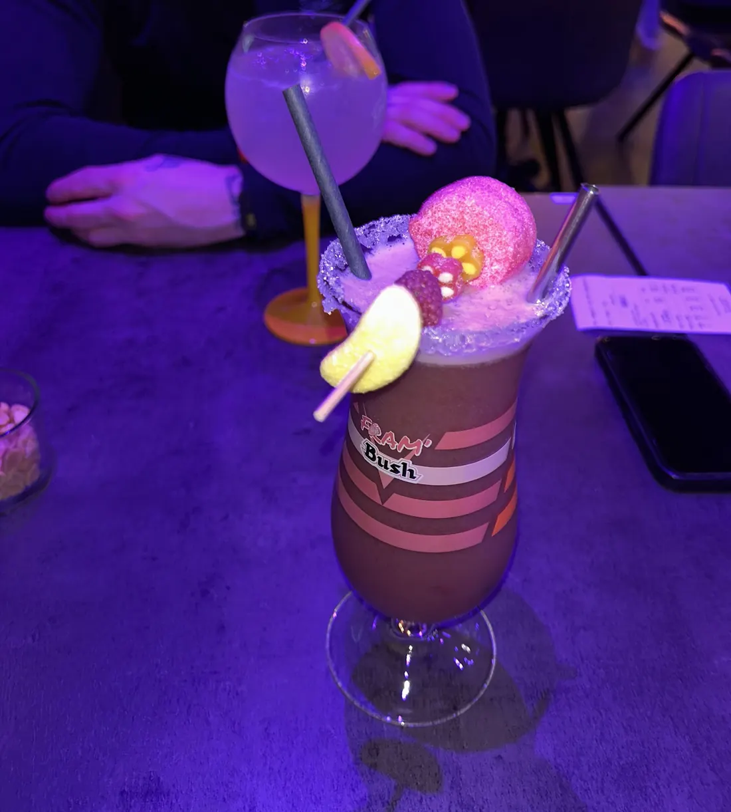
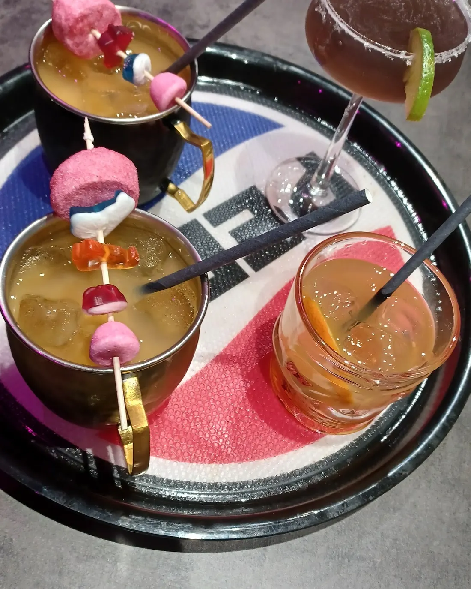
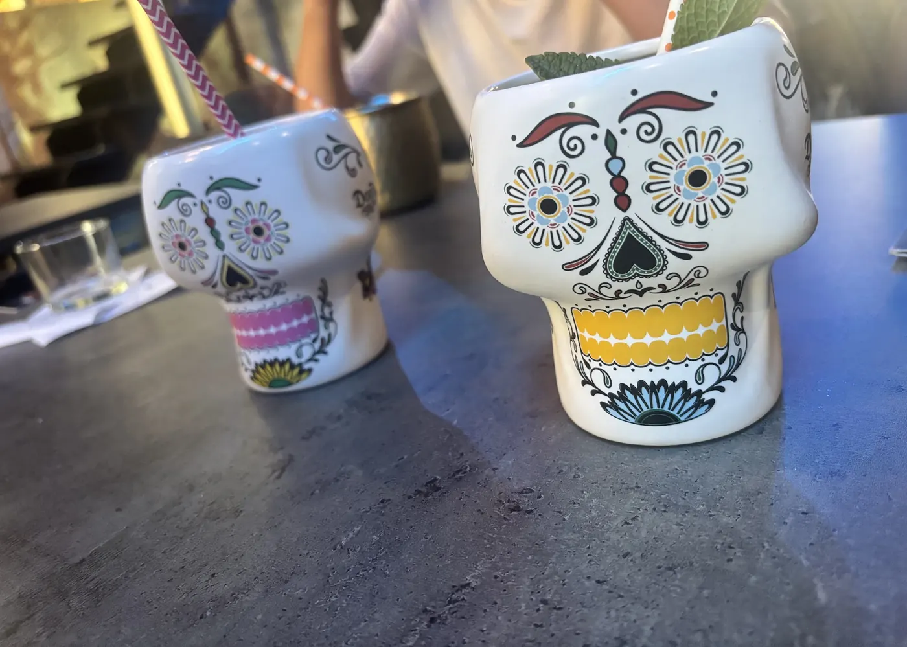
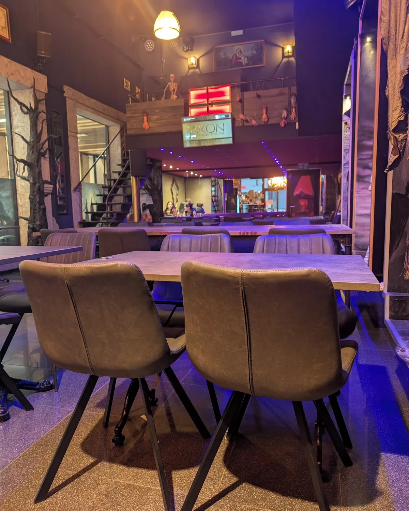
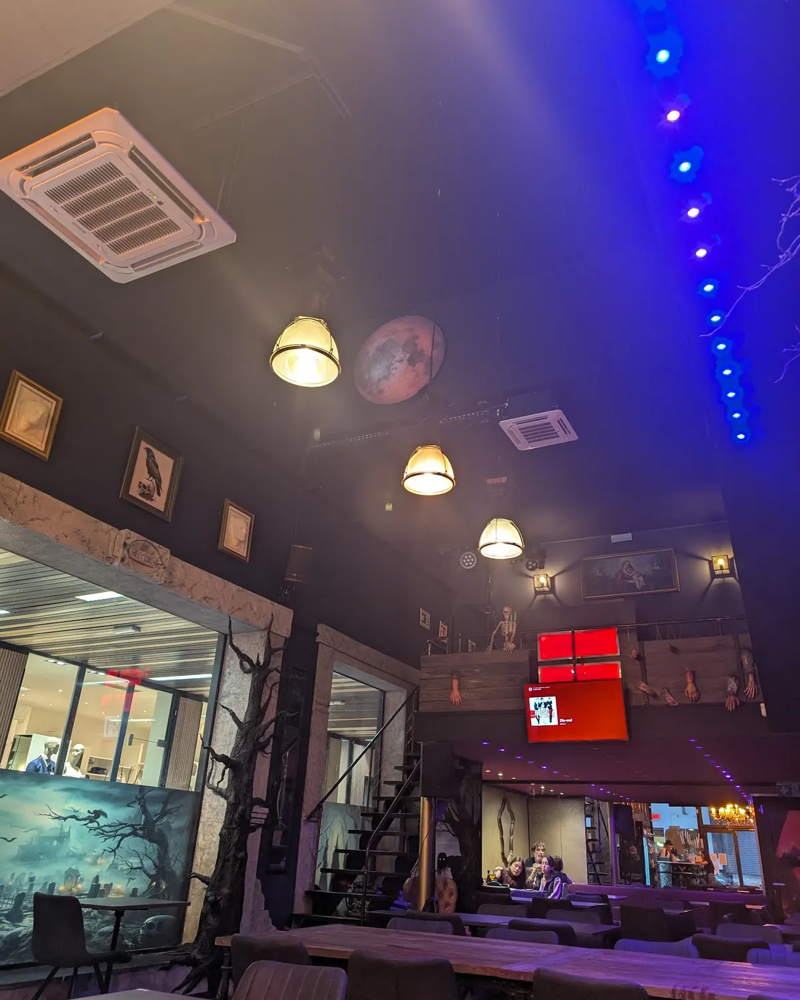
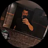

Le grand verre givré
Bord givré, feuille de menthe et deux pailles, servi bien rempli. À côté, une bière et sa rondelle de citron.


Bar à cocktails · La Louvière
Un bar à cocktails au décor de film d'horreur : crânes, momie, vampires, et une carte si longue qu'on a du mal à choisir. Rue Sylvain Guyaux, du mercredi au dimanche dès 16 h.
Mer. → dim. · dès 16 h
Jusqu'à 3 h le vendredi et le samedi
4,3 sur Google
Au comptoir
Allooui, avis Google 5 étoiles
Grands verres givrés, mugs en forme de crâne, brochettes de bonbons : voici ce qui arrive sur les tables, photographié par les clients.

Bord givré, feuille de menthe et deux pailles, servi bien rempli. À côté, une bière et sa rondelle de citron.

Guimauve rose, bonbons et citron plantés sur le verre.

Mugs en cuivre, brochettes de bonbons, bord salé et citron vert.
Ticket du 21 mars 2025, photographié par un client et publié sur Google. La carte complète et les prix du jour sont au bar.
DR JEKYLL ET MR COCKTAIL
21/03/2025 · sur place
Le Re Animator9,00 €
Le Krampus8,00 €
Rue Sylvain Guyaux 14 · La Louvière

Céramique peinte façon calavera, menthe fraîche et paille rayée : le cocktail se boit dans un crâne.
Tout ça pour un prix plus que correct et des cocktails généreusement servi.
Natacha S., avis Google 4 étoilesLe décor
Natacha S., avis Google
Deux visages, comme le docteur du roman. Côté Jekyll, un bar en bois sculpté sous un lustre doré, des portraits anciens au mur. Côté Hyde, une grande salle baignée de lumière bleue, où des silhouettes drapées veillent sur les tables.


Chouette endroit particulier style film d'horreur. Très propre toutefois.
Allooui
Patron aux petits soins. Moment vraiment agréable
Ludo C.
Le service est irréprochable : souriant, rapide et attentif.
Diego H.
Lors du karaoke de ce soir nous avons entendu deux magnifiques voix […]
Natacha S.
Ils l'ont écrit sur Google

Diego H., avis Google 5 étoilesVotre table
Choisissez le soir, l'heure et le nombre de personnes, dites-nous l'occasion : votre table vous attend, même pour un groupe.
« Nous y sommes venus fêter l'anniversaire de mon mari […] L'ambiance et le service nous ont plus énormément. »Natacha S., sur Google
Du mercredi au dimanche, dès 16 hPlutôt par téléphone ? 064 67 56 86
Du mercredi au dimanche, dès 16 h
| lundi | fermé |
|---|---|
| mardi | fermé |
| mercredi | 16 h – 1 h |
| jeudi | 16 h – 1 h |
| vendredi | 16 h – 3 htard |
| samedi | 16 h – 3 htard |
| dimanche | 16 h – 1 h |